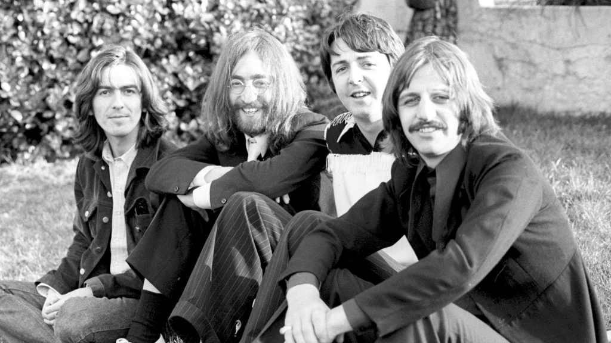

John Lennon
The founder, co-songwriter, co-lead vocalist and rhythm guitarist of The Beatles.

Paul McCartney, John Lennon, George Harrison and Ringo Starr
Timeline of John Lennon's Life
- October 9, 1940 - John Winston Lennon was born October 9, 1940, in Liverpool, Merseyside, NW England, UK.
- July 6, 1957 - Lennon made his first public music preformance with his first band, the Quarry Men at the Woolton Parish Church Garden Fete.
- October 16, 1962 - The Beatles realeased their first single.The Beatles were discovered by Brian Epstein in 1961 at the Cavern Club.
- August 23, 1962 - John Lennon married Cynthia Powell at the Mount Pleasant register office in Liverpool.
- September 20, 1969 - The Beatles fell apart in 1969. John Lennon officially left the group in Spetember, but decided not to announce it while the group was re-negotiating its record contract.
- November 70, 1980 - The album Double Fantasy, jointly credited to John Lennon and Yoko Ono and named for a flower he’d seen at a botanical garden.
- December 8, 1980 - John and Yoko returned to the studio to work on double fantasy plotting a full-fledged comeback. Then, shockingly, Lennon was shot to death outside the building where he and Ono lived.
“When I was 5 years old, my mother always told me that happiness was the key to life. When I went to school, they asked me what I wanted to be when I grew up. I wrote down ‘happy’. They told me I didn’t understand the assignment, and I told them they didn’t understand life.”
--John Lennon